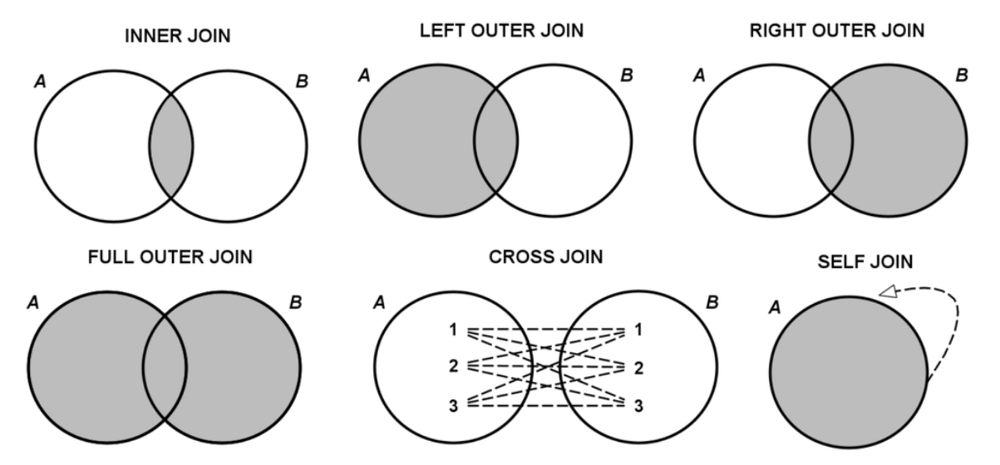
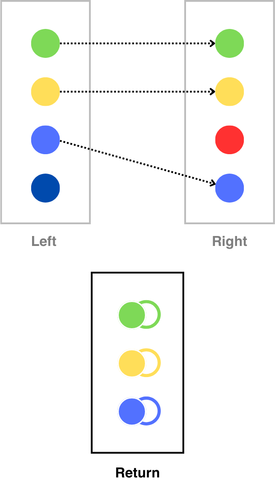
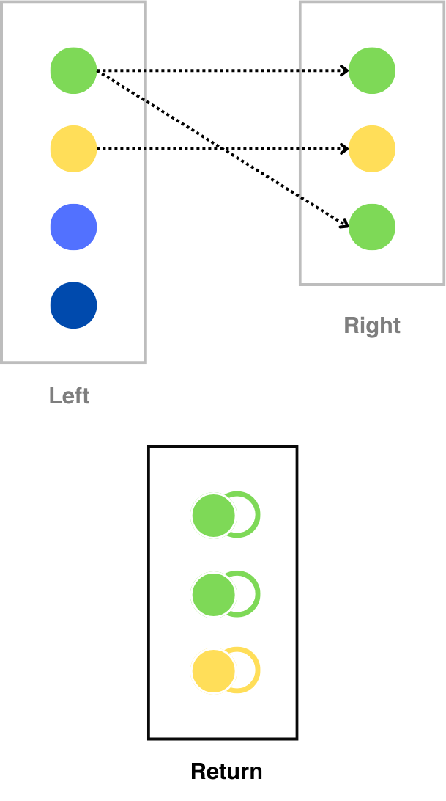
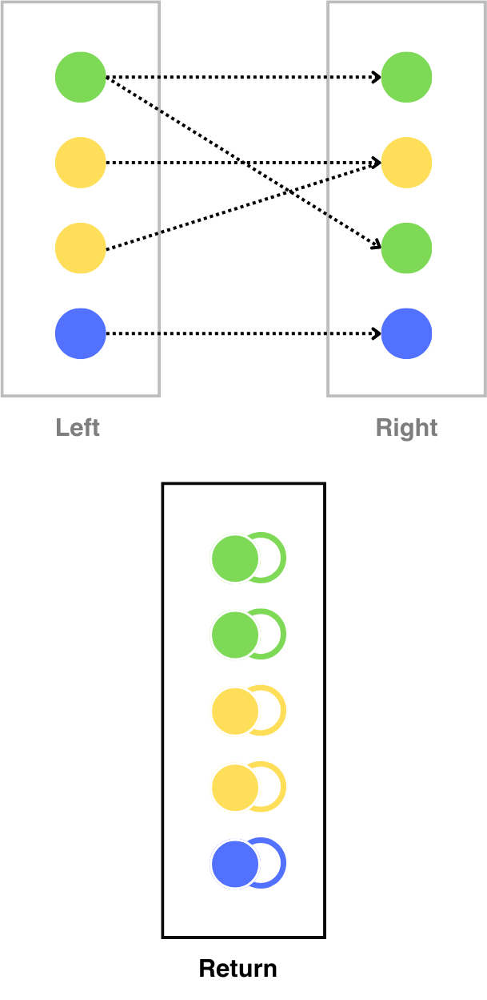

QGIS Mapping Techniques
Joins and Spatial Joins
In multiple scenarios you will find information in one table/layer that you want to tranfer into another. JOINS are the best way to do that; all you need is a common attribute. When two tables share one attribute (including data types), you can expand the attributes in one of the tables and use it for further analysis and/or visualision purposes.
Join Types
- Inner Join: Returns rows with matching attributes.
- Left (Outer) Join: Returns all rows from the left table, and the matched attributes from the right table.
- Right (Outer) Join: Returns all rows from the right table, and the matched attributes from the left table.
- Full (Outer) Join: Returns rows from both tables even when there is no matching attributes.
- Cross Join: Returns a Cartesian product of the two tables.
- Self Join: A table can be joined with itself.

Cardinality
One-to-One
Occurs when each record in one table corresponds to exactly one record in another table.

One-to-Many
Occurs when a single record in one table can be associated with one or more records in another table.

Many-to-Many
Occurrs when multiple records from one table correspond with one or more in another table.

- When using joins you are not modifying the original tables.
- Your resulting table can be much smaller or (exponentially) larger than any of the original tables.
Introduction to Spatial Joins
Similar to joining tables based on their attributes, one can join them based on their location (ultimately the location is nothing more than a ‘fancy’ attribute).
To achieve the expected results, make sure that both origin tables are in the same CRS.
Spatial predicates
In order to establish the relationship between the origin tables one can use a series of spatial predicates. The most common ones are:
Contains: Determines if one geometry contains another.Within: Checks if one geometry is within another geometry.Intersects: Tests if two geometries intersect at any point.Disjoint: Determines if two geometries do not intersect.Touches: Checks if two geometries have at least one point in common but their interiors do not intersect.Crosses: Determines if the geometries have some, but not all, interior points in common.Equals: Checks if two geometries are exactly the same in terms of spatial coordinates.Overlaps: Determines if two geometries overlap, meaning they share some but not all points, and the intersection has the same dimension as the geometries themselves.
Depending on the nature of your origin tables you might need to create a sequence of spatial transformations in order to approprietly join your dataset. A good practice is to outline a sequence of logical steps and then proceed to excecute them one at the time
eg. If you want to join a Linestring layer with a Poligon layer, some of the Linestrings might need to be sliced before joining. This will ensure a that your joined linestrings won’t be duplicated because they originally crossed/touched two or more of your Polygons.
Please note that depending on the size and complexity of your joins some operations can be computationally expensive and some advanced techniques might need to be implemented to achieve best performance.
Demo
During the demo we will use the following tools from the toolbox
- XXX
- XXX
Saving Styles
Georeferencing Images
Introduction to Georeferencing
What is georeferencing? Tools and plugins for georeferencing. Real-world examples of georeferenced maps and images.
Exporting Images
- Setting resolution, scale, and dimensions.
- Creating print layouts with multiple elements (maps, legends, text).